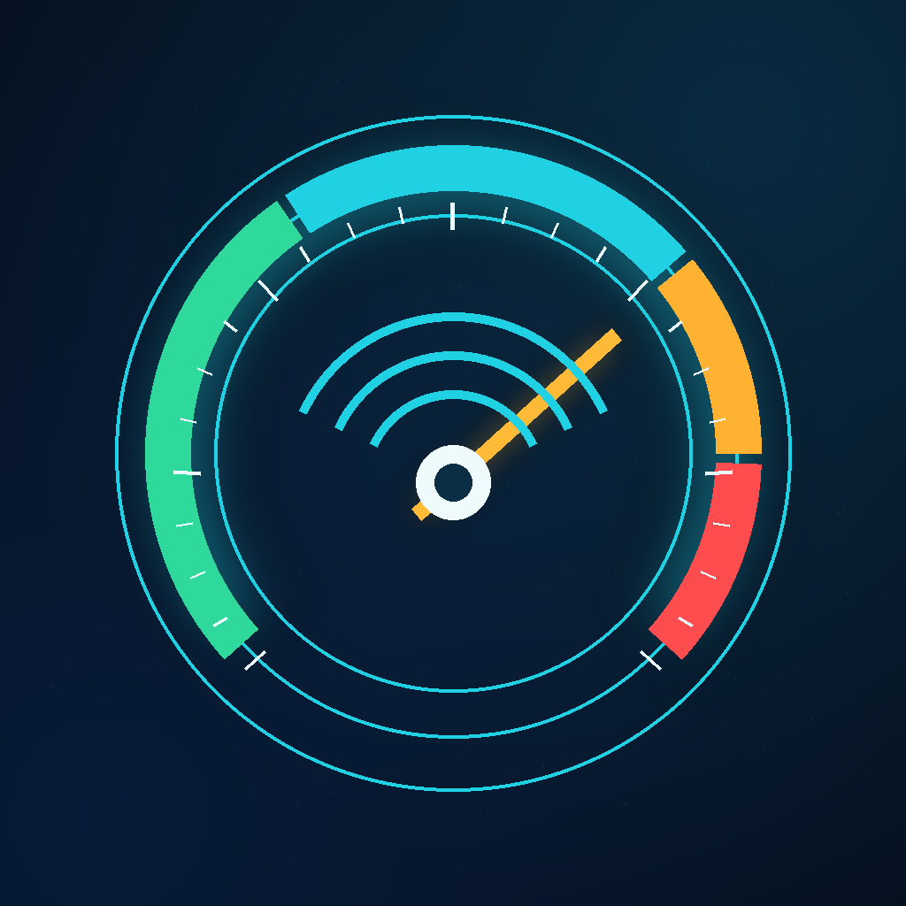

Ölçüm nasıl yapılır?
Kılıfı çıkarın, telefonu metal ve elektroniklerden uzakta sıfırlayın, ardından hedef üzerinde aynı yönde ve yavaşça hareket ettirin.

Canlı manyetik alan ölçümü, ortam sıfırlama ve yerel değişimleri karşılaştırma konusunda yardım alın.
Destek ekibine yazınGizlilik politikası
Kılıfı çıkarın, telefonu metal ve elektroniklerden uzakta sıfırlayın, ardından hedef üzerinde aynı yönde ve yavaşça hareket ettirin.
Manyetik alan; cihaz donanımı, mıknatıslar, hoparlörler, metal yüzeyler ve çevredeki elektroniklerden etkilenebilir.
iPhone modelini, iOS sürümünü, uygulama sürümünü ve sorunun tekrar adımlarını e-postanıza ekleyin.
Manyetometre ölçümleri cihaz üzerinde anlık işlenir; BZD Studio sunucularına gönderilmez ve hesap gerektirmez.